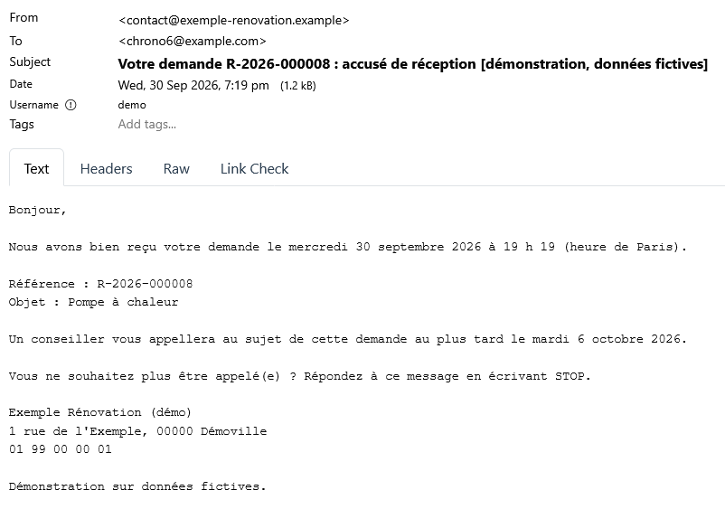
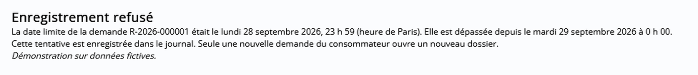
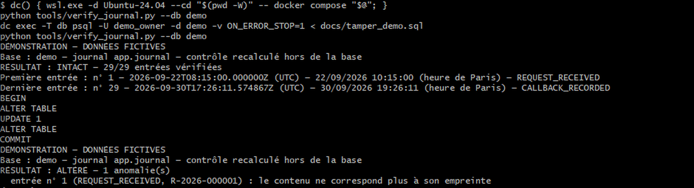
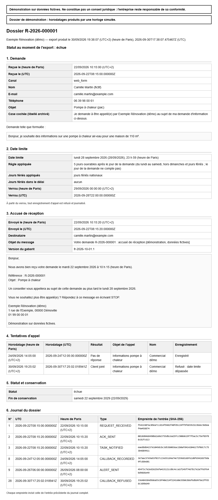

Demande de rappel : accusé en 60 s et journal de preuve
Démonstration sur données fictives. Ne constitue pas un conseil juridique : l'entreprise reste responsable de sa conformité. Exemple Rénovation (démo) est une entreprise fictive. · English version
Mesuré le 30 septembre 2026
| Ce qui est vérifié | Objectif | Mesuré |
|---|---|---|
| Accusé de réception reçu en moins de 60 s | 50 sur 50 | 50 sur 50 · médiane ≤ 0,3 s · p95 ≤ 0,3 s · max ≤ 0,3 s |
| Date limite de rappel identique à une table recalculée à la main | 20 sur 20 | 20 sur 20 (vérifiées à la main : 20) |
| Enregistrement d'un appel refusé et journalisé après la date limite | 10 sur 10 | 10 sur 10 · témoins acceptés avant la date limite : 3 sur 3 |
| Alerte e-mail la veille (jour ouvrable) pour une demande non traitée | 10 sur 10 | 10 sur 10 · alertes à tort : 0 |
| Modifications du journal détectées par le contrôle d'intégrité | 3 sur 3 | 3 sur 3 |
| Dossier exporté en un fichier par une personne non technique | 2 min au plus | 42 s (une personne non technique) |
| Messages au consommateur limités à l'objet de sa demande, relus | 5 sur 5 | 5 sur 5 |
Le problème
« Je rappelle déjà mes demandes. » La démonstration ne touche pas à l'appel. Elle ajoute trois choses : une date limite calculée juste, un verrou après cette date, et une preuve exportable en quelques minutes.
Pour la rénovation énergétique, le code de la consommation encadre ce rappel : l'appel qui répond à la demande d'information d'un particulier est passé dans les cinq jours ouvrables suivant la demande, il ne porte que sur les biens ou services demandés, et le professionnel conserve trois ans de quoi justifier la demande (art. R.223-4).
Ce que fait la démonstration
Elle se branche sur le formulaire du site et sur la messagerie. Elle ne remplace ni l'un ni l'autre, ni le CRM.
- Accusé de réception par e-mail : référence, objet, date limite de l'appel, identité de l'entreprise, moyen de s'opposer (réponse STOP, traitée par l'entreprise). Aucun contenu commercial, aucun lien.
- Date limite : 5 jours ouvrables, du lundi au samedi, hors dimanches et jours fériés nationaux, en heure de Paris, changement d'heure compris. La règle appliquée est affichée.
- Tâche d'appel envoyée au commercial, puis alerte la veille (jour ouvrable) si aucun appel « client joint » n'est enregistré.
- Verrou : après la date limite, le formulaire d'enregistrement d'appel refuse toute tentative et la trace dans le journal. Seule une nouvelle demande du particulier ouvre un nouveau dossier. L'outil ne peut pas empêcher un appel téléphonique : il refuse son enregistrement et en garde la trace.
- Journal en ajout seul : chaque événement est horodaté en UTC et en heure de Paris, puis chaîné par empreinte SHA-256. Le contrôle d'intégrité détecte toute modification ou suppression d'une entrée, sauf sur la dernière entrée du journal (voir Limites).
- Export d'un dossier en un fichier lisible sans logiciel : la demande telle que formulée, l'accusé, la date limite et sa règle, les tentatives d'appel, le statut et la date de fin de conservation (3 ans après la demande).




Comment c'est mesuré
- Accusés : 50 demandes envoyées une par une, toutes les 2 secondes, par un script extérieur au système. Le délai va de l'envoi du formulaire à l'apparition du message dans la boîte de réception de test. La remise sur Internet par la messagerie de l'entreprise n'est pas incluse. Trois essais chronométrés à la main : 1 s ; 1 s ; 1 s. La boîte de réception est interrogée toutes les 0,25 s : les délais affichés sont des bornes supérieures.
- Dates limites : 20 cas imposés (samedi, dimanche, 11 novembre, veille de jour férié, 23 h 59 et 0 h 01, nuit du changement d'heure, Noël, Alsace-Moselle), comparés à une table recalculée à la main.
- Verrou, alertes, journal : tests automatiques avec une horloge simulée ; les alertes sont comptées dans la boîte de réception de test.
- Export : chronométré. Messages : relus un par un.
- Environnement : n8n 2.40.7 et PostgreSQL 16.15 en local (Docker), boîte de réception de test Mailpit.
Limites
- C'est une démonstration, pas un historique de production.
- Par défaut, le jour de la demande ne compte pas ; une option le compte. La définition exacte des jours ouvrables est à valider par le conseil de chaque entreprise.
- Le contrôle d'intégrité ne couvre pas la dernière entrée du journal (suppression, ou réécriture avec empreinte recalculée), ni une réécriture complète du journal par l'administrateur de la base. Une empreinte copiée chaque jour hors de la base, ou un horodatage qualifié, peut s'y ajouter.
- L'accusé de réception est un e-mail transactionnel : chaque entreprise fait valider ses messages.
- La démonstration teste aussi une option Alsace-Moselle (fériés locaux). Elle ne sera pas proposée aux clients : un férié local ne peut que reculer la date limite.
- Les jours et heures d'appel autorisés par l'article D.223-9 du code de la consommation ne sont pas contrôlés par la démonstration.
Ce que reçoit l'entreprise
- L'installation dans ses propres comptes, avec des identifiants à son nom.
- Un mode d'emploi en français : fonctionnement, modification des messages, que faire en cas de problème.
- Le même test d'acceptation, à relancer après chaque modification.
Workflows n8n (export sans identifiants) : https://github.com/HgLovis-rqm/rappel-60s-demo/tree/main/n8n
Chaos Systems · 30 septembre 2026